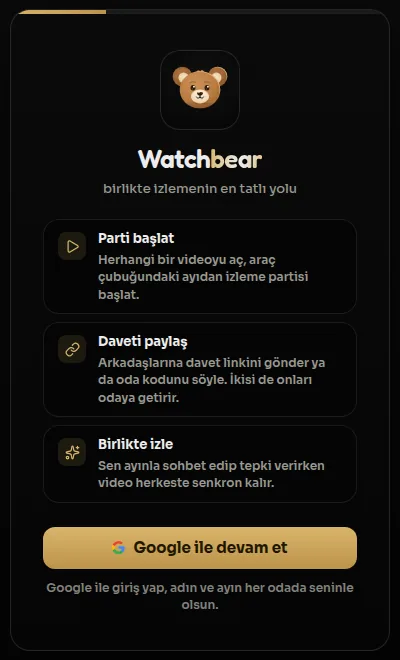

Netflix Party artık Teleparty adıyla devam ediyor.
Netflix party nasıl yapılır, telefondan olur mu?
Netflix'in bilgisayarda birlikte izleme düğmesi yok, bu işi bir Chrome eklentisi yapıyor. Bu rehberde ücretsiz Watchbear eklentisiyle Netflix party kurmayı adım adım anlatıyoruz, telefon sorusuna da dürüstçe cevap veriyoruz.
Netflix party nedir?
Farklı evlerdeki arkadaşların aynı diziyi ya da filmi aynı anda izlemesi, izlerken de yazışması veya konuşması. Biri durdurduğunda herkesin ekranı duruyor, biri geri sardığında herkes aynı sahneye dönüyor. Adı, Netflix Party adlı eklentiden geliyor. O eklenti bugün Teleparty adını taşıyor, Netflix party ise bu tür izlemenin genel adı olarak kaldı.
Başlamadan önce gerekenler
- Bilgisayarda Chrome. Watchbear bir Chrome eklentisi; dizüstü ya da masaüstü bilgisayar gerekiyor.
- Google hesabı. Odaya girmek için herkes Google ile giriş yapıyor. Ayrı bir hesap ya da şifre yok.
- Herkesin kendi Netflix hesabı. Film kimseye gönderilmiyor; herkes kendi hesabından açıyor.
- Aynı içerik herkeste olmalı. Netflix kataloğu ülkeye göre değişiyor. Yurt dışındaki bir arkadaşınla izleyeceksen içeriğin onda da olduğunu önceden kontrol edin.
Watchbear ile Netflix party: 4 adım
-
Eklentiyi kur ve giriş yap
Watchbear'ı Chrome Web Store'dan ekle, ayı simgesini araç çubuğuna sabitle ve Google ile devam et de. Chrome Türkçe ise eklenti de Türkçe açılıyor.

Kurulumdan sonra açılan Türkçe ekran. -
Netflix'te içeriği aç ve parti başlat
Netflix'te izleyeceğiniz bölümü ya da filmi aç. Araç çubuğundaki ayıya tıkla ve Bu videoyla parti başlat düğmesine bas. Oda, Chrome'un yan panelinde, oynatıcının hemen yanında açılıyor.

Açılır pencere. Görüntüde İngilizce; Türkçe Chrome'da düğme Bu videoyla parti başlat diye görünüyor. -
Davet linkini gönder
Panelden Davet linkini kopyala ya da doğrudan WhatsApp'ta gönder. Linkle uğraşmak istemeyen arkadaşına kısa oda kodunu söylemen de yetiyor.
Watchbear yüklü olmayan biri linki açınca önce kurulum düğmesini görüyor, kurduktan sonra aynı bölüme geliyor ve kendi Netflix hesabıyla izliyor.

Davet linkini açan arkadaşının gördüğü sayfa. -
Oynat, konuş, tepki ver
Odadaki herkes oynatabiliyor, durdurabiliyor ve ileri sarabiliyor; bütün oynatıcılar aynı saniyede kalıyor. Konuşmak istersen panelden mikrofonu ya da kamerayı aç. Kameran her girişte kapalı başlıyor.

Netflix'te açık bir oda: üç kişi kamerada, mesajlar yanda.
Telefondan Netflix party olur mu?
Watchbear ile olmuyor. Watchbear şu an yalnızca bilgisayardaki Chrome'da çalışıyor; telefonda ya da tablette kullanılamıyor. Odadaki herkesin bir bilgisayara ihtiyacı var.
Telefondan katılması şart olan biri varsa: Teleparty'nin destek sayfasına göre Teleparty'nin iOS ve Android uygulamaları Netflix, Disney+, Hulu ve HBO Max'i destekliyor. Uygulamalarda tarayıcı eklentisindeki her özelliğin olmadığını da yine aynı sayfada belirtiyorlar.
Netflix party eklentisi: Watchbear mı, Teleparty mi?
İkisi de herkesin Netflix oynatıcısını senkron tutuyor ve ekran paylaşmadığı için herkes tam kalitede izliyor. Fark sohbette, fiyatta ve cihazlarda.
| Özellik | Watchbear | Teleparty |
|---|---|---|
| Fiyat | Ücretsiz | Ücretsiz sürüm var. Premium aylık 6,59 dolar, yıllık ödemede aylık 3,99 dolar |
| Görüntülü ve sesli sohbet | Herkes için ücretsiz, aynı anda 8 kişi | Kamerayı ve mikrofonu yalnızca Premium üyeler açabiliyor |
| Siteler | Netflix'e özel ayar, ayrıca YouTube, Vimeo ve standart oynatıcılı çoğu site | Belirli bir liste: Netflix, Disney+, Hulu, Prime Video, YouTube ve HBO Max ücretsiz; Crunchyroll, Paramount+ ve ESPN+ Premium ile |
| Kişi sayısı | 50 kişiye kadar | 1.000 kişiye kadar |
| Tarayıcılar | Chrome | Chrome, Edge, Safari ve Opera |
| Telefon | Yok, bilgisayar gerekiyor | iOS ve Android uygulaması var |
Teleparty bilgileri teleparty.com/support sayfasından, 28 Kasım 2026 itibarıyla.
Bir şey ters giderse
- Bu sayfada video yok diyor. Videoyu bir kez oynat, sonra paneli yeniden aç.
- Kamera ya da mikrofon açılmıyor. Chrome izni bir kez soruyor. Reddettiysen Chrome'un site ayarlarından izin verip tekrar dene. Kamerayı başka bir uygulama kullanıyorsa o görüşmeyi kapat.
- Netflix ekranı siyah görünüyor. Bu genellikle ekran paylaşımında olur. Watchbear'da herkes Netflix'i kendi sekmesinde açtığı için ekran paylaşmana gerek yok.
Sık sorulan sorular
Netflix party nedir?
Farklı evlerdeki kişilerin aynı Netflix içeriğini aynı anda izlemesi ve izlerken yazışması ya da konuşması. Netflix'in bilgisayarda böyle bir düğmesi olmadığı için bunu bir tarayıcı eklentisi yapıyor. Adı, Netflix Party adlı eklentiden geliyor; o eklenti bugün Teleparty adıyla devam ediyor.
Telefondan Netflix party yapılır mı?
Watchbear ile yapılmıyor: Watchbear yalnızca bilgisayardaki Chrome'da çalışıyor, telefon ve tablette çalışmıyor. Teleparty'nin destek sayfasına göre Teleparty'nin iOS ve Android uygulamaları Netflix, Disney+, Hulu ve HBO Max'i destekliyor.
Netflix party ücretli mi?
Watchbear ücretsiz; görüntülü ve sesli sohbet de dahil. Teleparty'nin ücretsiz sürümü senkron oynatma ve yazılı sohbet sunuyor, kamera ve mikrofonu açmak için Premium gerekiyor. Her iki durumda da herkesin kendi Netflix üyeliği olmalı.
Herkesin Netflix üyeliği olması gerekiyor mu?
Evet. Eklenti filmi göndermiyor, yalnızca oynatma konumunu paylaşıyor. Herkes içeriği kendi hesabından açtığı için odadaki herkesin o içeriğe erişebilmesi gerekiyor.
Bir Netflix party'ye kaç kişi katılabilir?
Watchbear'da bir odada en fazla 50 kişi olabilir, bunlardan en fazla 8 kişi aynı anda kamerayı ve mikrofonu açabilir.
İlk Netflix party'ni başlat
Eklentiyi ekle, Netflix'te bir bölüm aç ve linki gönder. Herkes aynı sahnede kalır.
Chrome'a ekle, ücretsizNetflix ve Teleparty, sahiplerinin ticari markalarıdır. Watchbear'ın Netflix ya da Teleparty ile bir bağlantısı yoktur.